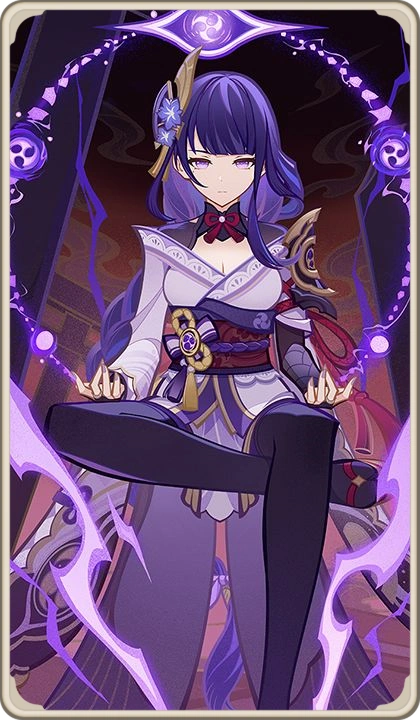

Ei (Beelzebul) and Makoto (Baal) were twin gods...
Makoto ruled Inazuma while Ei acted as her shadow warrior...
Ei preferred battle and protection over governance...
Their bond deeply influenced Ei’s emotional foundation...
Ei witnessed many conflicts during the Archon War...
This shaped her belief that change leads to loss...
Orobashi fled to Watatsumi Island after losing the Archon War...
He ruled and protected the people there...
Ei eventually defeated him in battle...
This split Yashiori Island and left lasting corruption...
The serpent’s remains caused storms and environmental damage...
500 years ago, Khaenri’ah fell during the Cataclysm...
Makoto traveled there and was killed...
Ei arrived too late to save her...
This loss deeply traumatized Ei...
She began fearing change and impermanence...
Ei created a puppet to rule in her place...
This puppet became the Raiden Shogun...
Ei entered the Plane of Euthymia...
The puppet enforced eternity without emotion...
Ei believed ambition leads to suffering...
She confiscated visions across Inazuma...
This led to rebellion and resistance...
The Traveler challenges Ei’s ideals...
She begins to question eternity...
She realizes change is necessary...
Ei evolves emotionally and philosophically...
⭐ Rarity: 5★
⚔️ Weapon: Polearm
⚡ Element: Electro
🧬 Constellation: Imperatrix Umbrosa
🏷️ Real Name: Raiden Ei (Beelzebul)
🏛️ Category: Archon / God
🎭 Role: Burst DPS / Energy Support
Raiden Shogun is designed around energy recharge and burst damage. She acts as both a main damage dealer and a powerful support unit.
Her Elemental Skill provides coordinated Electro attacks whenever teammates attack enemies, constantly applying Electro.
Her Elemental Burst transforms her into a sword-wielding state, dealing massive AoE Electro damage while restoring energy to the team.
The more energy her teammates consume, the stronger her Burst becomes, making her extremely valuable in high-energy team compositions.
Elemental Skill: Baleful Omen — Applies Electro damage and enables coordinated attacks.
Elemental Burst: Secret Art: Musou Shinsetsu — Massive burst damage and sword stance.
Passive: Enhances energy recharge scaling and team synergy.